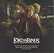

Celtic Lyrics Corner > Artists & Groups > Enya > The Fellowship Of The Ring > The Council Of Elrond
|  | The Council Of Elrond |
| Credits : | Enya; lyrics by Roma Ryan |
| Appears On : | The Fellowship Of The Ring (soundtrack) |
| Language : | Sindarin |
| Lyrics : | English Translation : |
| O môr henion i dhû | From darkness I understand the night |
| Ely siriar, êl síla | Dreams flow, a star shines |
| Ai, aníron Undómiel | Ah, I desire Evenstar |
| Tiro, êl eria e môr | Look, a star rises out of the darkness |
| I 'lîr en êl luitha 'uren | The song of the star enchants my heart |
| Ai, aníron... | Ah, I desire... |